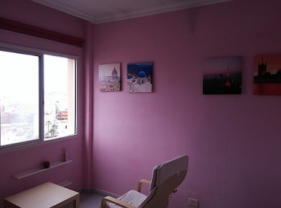
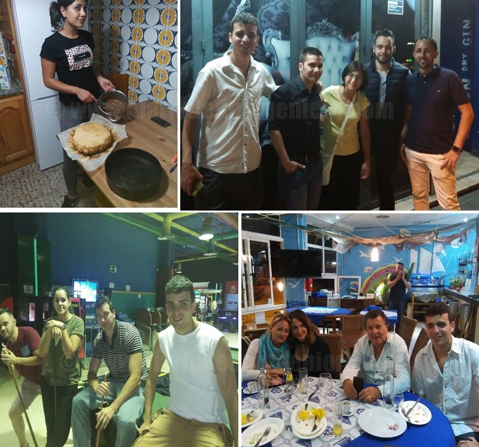

En Febrero de 2017 partí a Canarias a conocer las islas.
Ya habia estado con anterioridad en dos ocasiones pero no es lo mismo ir a vivir que ir de paso.
Con vistas en realizar estudios superiores, me mude a la capital, Las Palmas de Gran Canaria.
Comence en el norte en la zona de Las Canteras, cerca de todo el centro de la ciudad, la playa y la zona de ocio.
A través del conocido sitio AirBNB, defenestrado por las cadenas hoteleras debido a la competencia que sufren.
Estuve conviviendo con 2 estudiantes bulgaros muy majetes, muy fans de lo español. Hablando ingles y dandoles algo de lecciones de español.
En teoría, AirBNB ocupa un espacio que las cadenas hoteleras no ofrecen y es un lugar donde estar sin lujos simplemente para tener un sitio donde dormir. Esto es útil cuando se van a realizar gestiones o se busca un turismo más de mochila donde el tiempo que pasemos sea muy escaso. Pagar más de 50 euros en un hotel que no vas a estar es derrochar dinero y a día de hoy tal como estan las economías familiares en España es un delito.
Por ello más que airbnb el hecho de que gente normal ofrezca habitaciones de su casa a particulares me parece bastante normal y la repercursión en la economía siempre es positiva. Por mucho que nos quieran hacer creer, si el español medio salva dinero ahi lo acabara invirtiendo de otra manera y seguro que la gente puede salir más de su casa. Con lo que la felicidad del individuo aumenta y la productividad allá donde trabaja también.
 Por poco mas de 15 euros la noche estuve viviendo en un piso bastante cerquita de todo acompañado de dos estudiantes bulgaros y de un aleman.
Mientras busque un sitio más asequible para estar meses allí y no tardaría más de una semana en ello.
Mientras pasaba los dias pude disfrutar del carnaval canario.
Tambien pude pasear por la playa de las canteras aunque muchos días estaba no apta para el baño por medusas y fuerte oleaje, contando que estabamos en Febrero.
Buen mes para el surf, mal mes para el baño.
Coincidi en plena oleada del carnaval canario por lo que las calles estaban siempre rebosando de charanga y de gente.
La temperatura es bastante agradable si bien en esta época del año la mitad de los días en Las Palmas esta nublado.
Es por eso que existe gran contraste con el sur de la isla, donde el sol brilla casi todos los días del año.
Por poco mas de 15 euros la noche estuve viviendo en un piso bastante cerquita de todo acompañado de dos estudiantes bulgaros y de un aleman.
Mientras busque un sitio más asequible para estar meses allí y no tardaría más de una semana en ello.
Mientras pasaba los dias pude disfrutar del carnaval canario.
Tambien pude pasear por la playa de las canteras aunque muchos días estaba no apta para el baño por medusas y fuerte oleaje, contando que estabamos en Febrero.
Buen mes para el surf, mal mes para el baño.
Coincidi en plena oleada del carnaval canario por lo que las calles estaban siempre rebosando de charanga y de gente.
La temperatura es bastante agradable si bien en esta época del año la mitad de los días en Las Palmas esta nublado.
Es por eso que existe gran contraste con el sur de la isla, donde el sol brilla casi todos los días del año.
Al final encontre un alojamiento bastante asquible en la zona de Alcaravaneras donde me asentaría.
Esta zona es bastante cara, pegando con Mesa y Lopez y el puerto deportivo.
En ella se encuentra tambien el mercado central donde se puede comprar verdura fresca y frutas y las mejores carnes venidas de la península.
 A partir de ahi estuve visitando las palmas, comenzando por dar una vueltita por la isleta y ver la maginifica playa del confital y el oleaje en estado puro asi como algunas estructuras antiguas que hay edificadas junto a las rocas.
Visitar el muelle, centro comercial cercano a Santa Catalina, etc.
Una vez ahi aparte del ocio y la playa que otorga las islas, estuve estudiando para revalidar mi titulo de IETLS, donde obtuve en Abril el B2 bajando mi marca de C1/B2.
También me informe de los masteres de la universidad de las palmas, en concreto el master del profesorado para poder asistir al siguiente año.
Fueron muchos los papeles que hubo que entregar y un proceso de selección bastante exhaustivo donde solo un 25% de los que aplicaron obtuvo plaza.
A partir de ahi estuve visitando las palmas, comenzando por dar una vueltita por la isleta y ver la maginifica playa del confital y el oleaje en estado puro asi como algunas estructuras antiguas que hay edificadas junto a las rocas.
Visitar el muelle, centro comercial cercano a Santa Catalina, etc.
Una vez ahi aparte del ocio y la playa que otorga las islas, estuve estudiando para revalidar mi titulo de IETLS, donde obtuve en Abril el B2 bajando mi marca de C1/B2.
También me informe de los masteres de la universidad de las palmas, en concreto el master del profesorado para poder asistir al siguiente año.
Fueron muchos los papeles que hubo que entregar y un proceso de selección bastante exhaustivo donde solo un 25% de los que aplicaron obtuvo plaza.

En esta ocasión estuve conviviendo con unas chicas provenientes del sur de Italia y con gente italiana en general.
Además en Canarias tengo primos que no había visto demasiado anteriormente y que tuve el placer de conocer más a fondo.
Viviendo en canarias uno se da cuenta de como es el dia a día de la gente de allí. La ciudad tiene un ritmo lento, pero siempre hay actividad.
Además, la calidad de vida esta muy por encima en general a la de cualquier ciudad en la península.
Olvidandose uno de si es lunes o es sabado ya que cualquier día de la semana ofrece las mismas características para disfrutar.
Más de la mitad del trabajo de la ciudad esta orientado a la hosteleria y la restauración con lo que casi más de la mitad tienen un trabajo que va a turnos.
Esto hace que todos los días puedan ser como un fin de semana y se pierda la noción de tiempos a parte de que basicamente hay una estación en todo el año si bien con algunas connotaciones.
Aun teniendo una tasa de paro que duplica muchas zonas de la de la península cercana al 30% la gente vive bastante ajena a esta situación.
A parte de que cerca de un 30% siempre es población itinerante de Europa o de la península, el trato entre las personas es bastante cordial y apenas ocurren eventos desagradables.
Más aun contando la cantidad de sitios de fiesta y bares donde se sirve alcohol u otros elementos.
En las islas no existe un sistema de comunicación entre ciudades muy complejo. En Gran Canaria se cuenta con una autopista que conecta el norte con el sudoeste.
Esta proyectado terminar el anillo en la isla pero con lo que hay en este momento es más que suficiente.
El sistema rey de transporte es la guagua, lo que llamamos aqui autobus.
La isla cuenta con innumerables lineas de guagua que conectan las ciudades entre sí y en la capital los barrios con estación principal la de San Telmo.
Mediante la tarjeta amarilla de transportes por poco más de 6 euros y 45 minutos de viaje podras moverte desde la capital a Maspalomas o playa del Ingles, las zonas mejores para disfrutar del sol y de la playa.
La isla cuenta con una oferta en un marco muy amplio, desde visitas por el casco histórico, la gran cantidad de playas en sus numerosos kilometros de costa. Así como ocio nocturno asi como turismo rural y naturaleza o actividades deportivas.

 La isla es uno dos sitios de España donde desde el punto de vista del tamaño contamos con una oferta tan variada.
Debido a su situación y a su clima se pueden practicar actividades naúticas todo el año, tales como submarinismo, windsurf, piraguismo, etc.
La isla cuenta con grandes vientos este oeste, y por el norte, habiendo zonas de mar donde es peligroso bañarse pero para profesionales de estos deportes, son lugares muy aptos.
La isla es uno dos sitios de España donde desde el punto de vista del tamaño contamos con una oferta tan variada.
Debido a su situación y a su clima se pueden practicar actividades naúticas todo el año, tales como submarinismo, windsurf, piraguismo, etc.
La isla cuenta con grandes vientos este oeste, y por el norte, habiendo zonas de mar donde es peligroso bañarse pero para profesionales de estos deportes, son lugares muy aptos.
La ciudad de Las Palmas desde el año 2003 cuenta con un nuevo estadio con capacidad de 55.000 espectadores, que aun sigue actualizandose a los nuevos tiempos, siendo canarias también un sitio muy futbolero.
Alli pude disfrutar junto a mi primo del partido de la liga que enfrentaba a Union Deportiva Las Palmas contra el Atlético de Madrid, partido que acabo con la victoria del Atlético, mi equipo con un apabullante 0-5.


En Gran Canaria se cuenta multitud de sitios para disfrutar por la noche, si bien cabe recalcar tres areas.
- Las Canteras, y en concreto cerca del auditorio Alfredo Kraus, y el centro comercial Las Arenas, con varios pubs y plazas donde tomarse algo.
- Santa Catalina, junto al muelle, con discotecas que cierran más tarde y donde hay bastante extranjeros.
- Vegueta, cerca del casco historico, donde principalmente es la juventud la que se mueve, y sobre todo estudiantes de la universidad. Muy frecuentada los jueves y viernes.
Al sur de la isla se encuentra la mayor ciudad turística de todas las islas donde estan varias de las mejores discotecas.
Si bien no es comparable a la fiesta en las islas Baleares si que es cierto que esta zona no para durante todo el año, debido al buen tiempo.
Discotecas principales como ZigZag, Dubai o Pacha.
Esta última bastante pequeña y no comparable a otros pachas, siendo además la entrada muy restringida según cuando les convenga.
Lo mejor sin duda son las fiestas de los pueblos donde se puede disfrutar del ron autentico de la isla y de talleres de meridaje de ron.
Además los precios son muy bajos en todo y la gente bastante más agradable que en la costa o en la capital.
Sin embargo como todas las fiestas de patrones son un fin de semana al año.
Debido a la gran cantidad de pueblos la oferta es amplia.
Aqui debajo dejo una foto de Maspalomas, la playa más bonita de toda Las Palmas y una de las mejores de las islas canarias junto con las de Fuerteventura.
© 2016 - All Rights Reserved - Diseñada por Sergio López Martínez
![[Valid RSS]](https://www.feedvalidator.org/images/valid-rss-rogers.png "Validate my RSS feed")